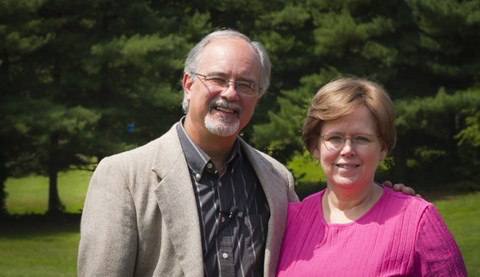

We are a church in the heart of the Shenandoah Valley that is focused on the whole family. We have a place for anyone who wishes to join us in worshiping the Lord. We know you'll find a warm and welcoming home with our church family.
You can watch the morning service live on our FaceBook page. Be sure to follow us on facebook for more information on upcoming events and daily scripture.
Videos are also uploaded to YouTube after the service. Please subscribe to our channel for future videos.
Children (Preschool - 8th Grade) are welcome to participate in the Awana Program that meets on Wednesday Nights September - May. (See the Awana Clubs for more detail)
| Sunday Services | |||
|---|---|---|---|
| 9:00am | - | 10:00am | Sunday School |
| 10:00am | - | 10:20am | Fellowship in the Gym |
| 10:30am | - | 11:30am | Worship Service |
| Wednesday Night Services | |||
|---|---|---|---|
| 6:30pm | - | 7:30pm | Devotion and Intentional Prayer |
| 6:30pm | - | 8:30pm | Awana Clubs* |
| *Meets September - May | |||
Thank you so much for visiting the Web Page of Shenandoah Valley Baptist Church. We would enjoy the opportunity to meet you and your fmaily so I want to personally invite you to come "kick the tires" so to speak and join us for a time of learning, fellowship, and worship. Should you formulate any questions as you peruse this site feel free to contact us through our contact page. I look forward to personally meeting you.
Pastor Don & Debbie Cherry
SVBC
Garrett and his wife Nicole are recent graduates of WVU who now live in the Martinsburg (WV) area. Both WV natives, Garrett has been involved in praise teams both in High School and college. We are grateful to have Garrett lead our time of praise and so appreciate he and Nicole's commitment here at SVBC.
More photos avilable on our FaceBook page!